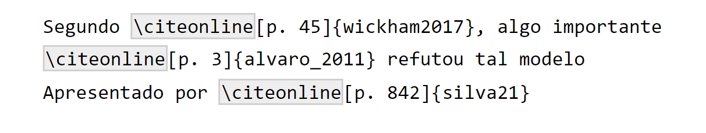
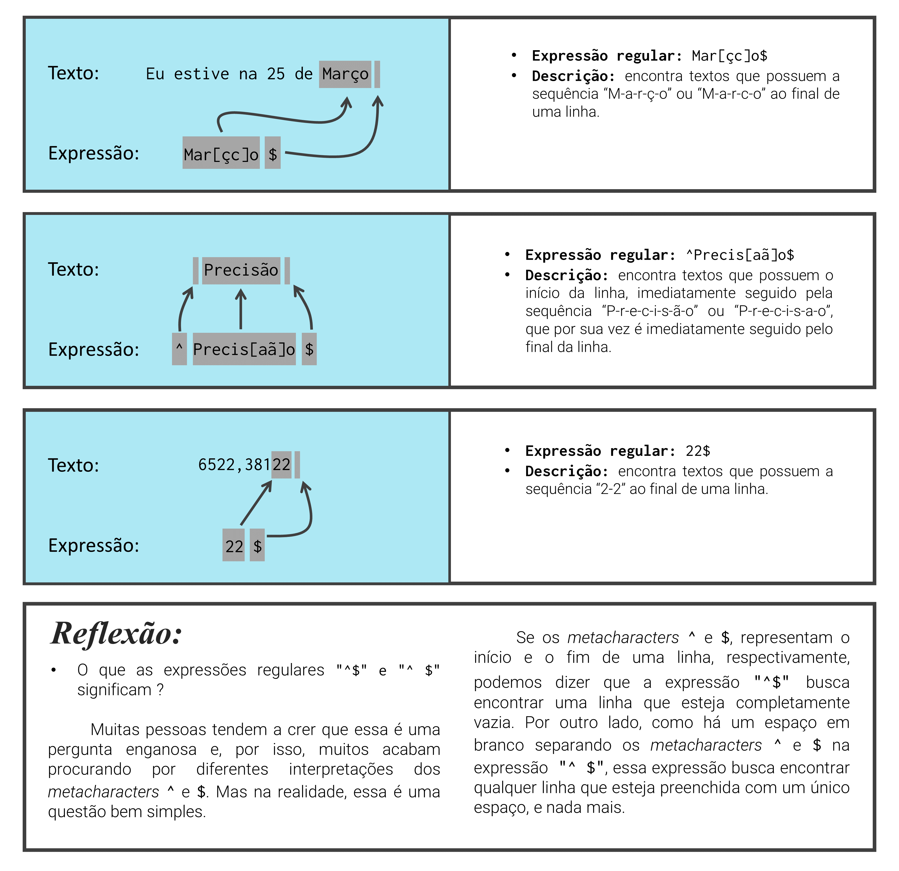
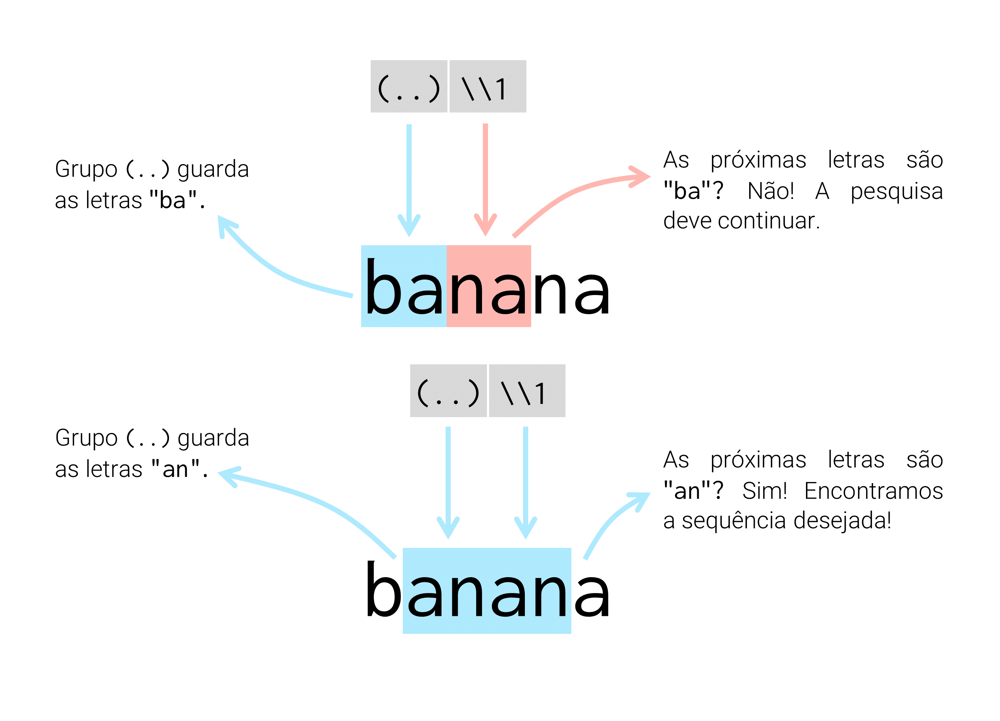
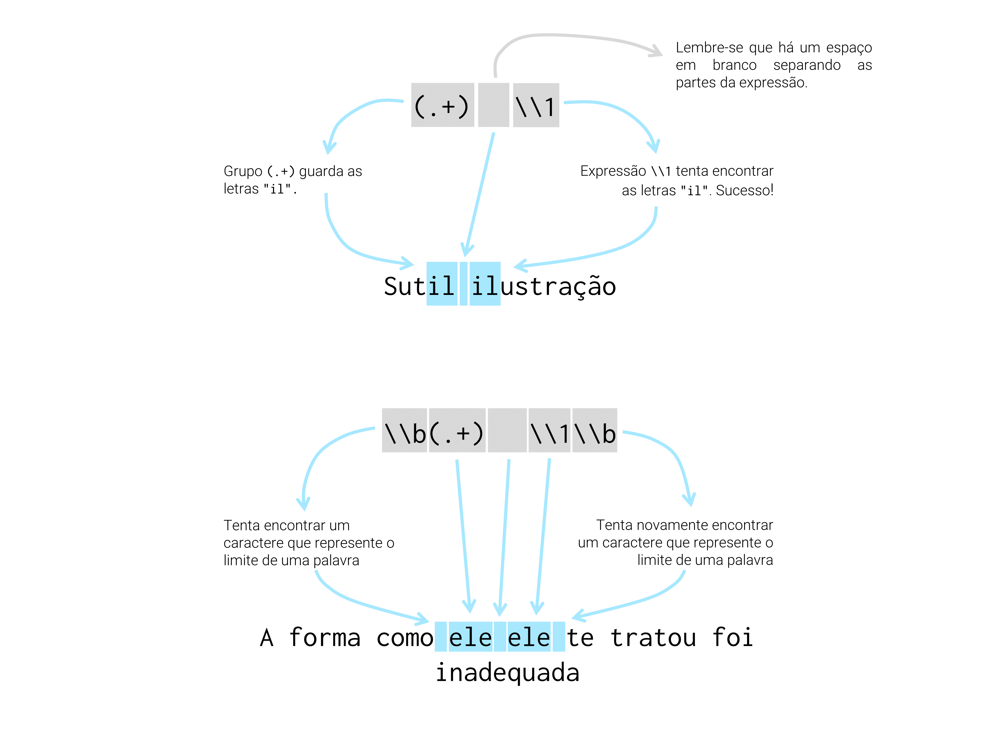

library(stringr)
library(tidyverse)10 Manipulação e transformação de strings com stringr
10.1 Introdução e pré-requisitos
Neste capítulo, vamos aprender mais sobre operações especializadas em dados textuais (dados do tipo character), ou como são mais comumente denominados em programação, strings. Esse capítulo também oferece uma introdução a um dos principais e mais importantes tópicos em processamento de texto, as expressões regulares (regular expression), ou regex como é mais conhecida. Para aplicarmos as diversas operações expostas, vamos utilizar as funções disponíveis no pacote stringr. Esse pacote está incluso no tidyverse, logo, para ter acesso às funções apresentadas, você pode chamar pelo tidyverse ou pacote stringr diretamente, por meio do comando library().
10.2 Algumas noções básicas
Textos ou strings no R, são criados ao contornarmos um determinado texto por aspas (duplas - ", ou simples - '), e cada letra, espaço, símbolo ou número que compõe esse texto, é comumente denominado de caractere. Caso você se esqueça de fechar o par de aspas que contorna o seu texto, o R vai esperar até que você complete a expressão. Ou seja, em seu console, estaria acontecendo algo parecido com o que está abaixo. Lembre-se que você pode apertar a tecla Esc, para abortar a operação, caso você não consiga completá-la.
> x <- "Olá eu sou Pedro!
+
+ Como as aspas são responsáveis por delimitar esse tipo de dado, para que você possa incluir esse caractere em alguma cadeia de texto, você tem duas alternativas: 1) se você está contornando o texto com aspas duplas, utilize aspas simples, ou vice-versa; 2) contornar o comportamento especial das aspas, ao posicionar uma barra inclinada a esquerda antes de cada aspa (\" ou \').
"Olá! Esse é um texto qualquer"[1] "Olá! Esse é um texto qualquer""Para incluir aspas ('') em uma string"[1] "Para incluir aspas ('') em uma string""Será que \"alienígenas\" existem de fato?"[1] "Será que \"alienígenas\" existem de fato?"Além disso, textos podem incluir diversos outros caracteres especiais. Sendo os principais exemplos, os caracteres de tabulação (\t), e de quebra de linha (\n). Entretanto, uma quantidade muito grande desses caracteres especiais, podem dificultar a nossa compreensão do conteúdo presente em um texto. Logo, há vários momentos em que desejamos visualizar o texto representado em uma string de maneira “crua”. Para isso, podemos aplicar a função writeLines() sobre o texto em questão.
texto <- "Receita:\n\t\t2 ovos\n\t\t3 copos e meio de farinha
\t\t2 copos de achocolatado\n\t\t1 copo de açúcar\n\t\tMeio copo de óleo
\t\t1 colher (de sopa) de fermento
\t\t1 colher (de café) de bicabornato de sódio\n\t\t..."
writeLines(texto)Receita:
2 ovos
3 copos e meio de farinha
2 copos de achocolatado
1 copo de açúcar
Meio copo de óleo
1 colher (de sopa) de fermento
1 colher (de café) de bicabornato de sódio
...texto <- "Será que \"alienígenas\" existem de fato?"
writeLines(texto)Será que "alienígenas" existem de fato?Outro exemplo clássico de caracteres especiais, que são muito encontrados em páginas da internet (e.g. dados coletados em operações de web scrapping), são os códigos hexadecimais ou code points correspondentes a uma determinada letra presente no sistema Unicode. Descrevemos brevemente na seção Um pouco sobre fontes, encoding e tipografia, a importância do Unicode para a universalização dos sistemas de encoding, e consequentemente, para a internacionalização de conteúdo.
Cada caractere no sistema Unicode, é representado por um unicode code point (HARALAMBOUS, 2007). Em resumo, um code point é um número inteiro que pode identificar unicamente um caractere presente no sistema Unicode. Porém, caracteres que são codificados nesse sistema, são normalmente representados pelo código hexadecimal que equivale ao seu respectivo code point. Logo, ao invés de um número específico, você normalmente irá encontrar em strings, códigos que se iniciam por \u, ou \U, ou ainda U+, seguidos por uma combinação específica de letras e números. Como exemplo, os códigos hexadecimais abaixo equivalem aos code points que formam a palavra “Arigatōgozaimashita”, ou “Muito obrigado” em japonês.
x <- "\u3042\u308a\u304c\u3068\u3046\u3054\u3056\u3044\u307e\u3057\u305f"Um outro ponto muito importante em strings está no uso de barras inclinadas à esquerda. Nós já vimos na seção Definindo endereços do disco rígido no R, que para representarmos uma barra inclinada à esquerda em uma string do R, precisarmos duplicar essa barra. Logo, em strings, a sequência \\ significa para o R \. Existem alguns comandos e caracteres especiais que não requerem essa prática, como o comando que forma um Unicode code point (como demonstrado acima), que sempre se inicia por uma letra “u” antecedida por uma barra inclinada à esquerda (ex: \u3042). Um outro exemplo são os comandos para tabulações e quebra de linha que acabamos de mostrar (\t e \n). Entretanto, essas exceções são a minoria. Portanto, tenha esse cuidado ao utilizar barras inclinadas à esquerda em suas strings.
10.3 Concatenando ou combinando strings com paste() e str_c()
Concatenar, significa unir diferentes valores. Porém, essa união pode ocorrer de diferentes maneiras, e como ela ocorre, tende a depender das funções que você utiliza, como você as configura, e com quais tipos de estruturas você está trabalhando. Com isso, eu quero destacar, que o termo concatenar, pode se referir a muitas coisas (ou operações) diferentes. Na linguagem R, uma das principais operações de concatenação está presente na formação de vetores atômicos, mais especificamente, no uso da função c() (abreviação para combine), que introduzimos na seção de Vetores.
O papel da função c() é criar uma sequência a partir de um conjunto de valores. Essa sequência de valores, é o que forma um vetor, e é o que estabelece uma relação de dependência ou de união entre esses valores, pois os torna parte de uma mesma estrutura. Cada um deles possuem uma ordem, ou uma posição dentro dessa sequência, mas nenhum deles é capaz de gerar essa sequência sozinho.
Entretanto, ao concatenarmos textos, nós geralmente estamos nos referindo a uma operação um pouco diferente. Tradicionalmente, ao concatenarmos um conjunto de textos, nós já possuímos um vetor (ou mais vetores) em nossas mãos, e desejamos unir cada elemento, ou cada texto contido nesse vetor, de alguma forma lógica. Dentre os pacotes básicos do R, a principal função que realiza esse tipo de operação, é a função paste(). Um detalhe importante sobre essa função, é que ela converte, por padrão, qualquer tipo de input que você fornecer a ela, para o tipo character. Logo, você pode incluir dados numéricos ou de qualquer outro tipo nos input’s dessa função.
A forma como a função paste() realiza essa união entre os textos, depende diretamente de como você configura os argumentos da função, sep e collapse, e de quais input’s você fornece à função. Se você está fornecendo um único input à função, é certo que você está preocupado apenas com o argumento collapse (em outras palavras, sep é irrelevante nesse caso). Em resumo, o argumento collapse define qual o texto que irá separar os diferentes elementos do input que você forneceu a função. Em outras palavras, se o input que fornecemos é, por exemplo, um vetor de textos, ao definirmos o argumento collapse, estamos pedindo à paste() que junte todos os diferentes elementos do vetor, dentro de um único texto, separando-os pelo texto que você definiu no argumento collapse.
Por exemplo, se eu possuo o vetor vec abaixo, e utilizo a função paste() sobre ele, veja o que ocorre ao definirmos o argumento collapse. Perceba no exemplo abaixo, que todos os elementos do vetor vec, foram unidos dentro de um mesmo texto, onde cada um desses elementos são separados pelo texto " : " que definimos no argumento collapse.
vec <- c("a", "b", "c", "d", "e")
conc_vec <- paste(vec, collapse = " : ")
conc_vec[1] "a : b : c : d : e"## --------------------------
## Um outro exemplo:
nomes <- c("Ana", "Fabrício", "Eduardo", "Mônica")
mensagem <- paste(nomes, collapse = " e ")
mensagem[1] "Ana e Fabrício e Eduardo e Mônica"Portanto, o texto que você define em collapse, será o texto que vai separar cada um dos elementos do vetor que você fornece como input à função paste(). Por padrão, o argumento collapse é setado para nulo (NULL). Isso significa, que se você não definir algum texto para o argumento collapse, nada acontece ao aplicarmos a função paste() sobre o vetor. Como o argumento sep é irrelevante para um único input, se você não está interessado nesta operação que ocorre ao definirmos collapse, a função paste() não é o que você está procurando.
Por outro lado, se você está fornecendo dois ou mais inputs à função paste(), é provável que você esteja interessado em definir apenas o argumento sep, apesar de que o argumento collapse pode também ser útil para o seu caso. Ao fornecermos dois ou mais vetores como inputs, a função paste(), por padrão, tenta unir os elementos desses vetores, de forma a produzir um novo vetor de texto. Por exemplo, se eu forneço dois vetores à função paste(), como os vetores vec e id abaixo, o primeiro elemento do vetor resultante de paste() vai possuir os textos presentes no primeiro elemento de ambos os vetores.
id <- 1:5
vec <- c("a", "b", "c", "d", "e")
conc_vec <- paste(id, vec)
conc_vec[1] "1 a" "2 b" "3 c" "4 d" "5 e"O argumento sep é responsável por definir o texto que vai separar os valores de diferentes input’s da função paste(). Perceba no exemplo acima, os valores dos vetores id e vec, estão todos separados por um espaço em branco. Isso significa, que por padrão, o argumento sep é configurado como um espaço em branco (" "), e, portanto, você não precisa definir o argumento sep, caso você deseja separar esses valores por um espaço. Mas se há interesse em um texto diferente, para separar esses valores, você deve defini-lo através do argumento sep. Por exemplo, você talvez deseja que não haja espaço algum entre esses valores, como exemplo abaixo.
id <- 1:5
vec <- c("a", "b", "c", "d", "e")
conc_vec <- paste(id, vec, sep = "")
conc_vec[1] "1a" "2b" "3c" "4d" "5e"Assim sendo, em uma representação visual, podemos identificar os papéis dos argumentos sep e collapse da forma apresentada na Figura 10.1.

sep e collapse em paste()
Porém, na maioria das aplicações práticas dessa função, pelo menos um dos input’s fornecidos será constante. Por exemplo, uma situação muito comum de uso dessa função, é a construção de caminhos (ou paths) para diferentes arquivos. Essa é exatamente a aplicação que utilizamos na seção Um estudo de caso: uma demanda real sobre a distribuição de ICMS.
Nessa seção, em uma das primeiras etapas descritas, precisamos ler ao todo, 12 planilhas diferentes, e como descrevemos no capítulo 4, para importarmos qualquer arquivo, nós precisamos fornecer o caminho até esse arquivo para o R. Com isso, teríamos a tarefa tediosa de construirmos 12 caminhos diferentes (imagine se fossem 36, ou 320 planilhas diferentes a serem lidas). Porém, como todas essas planilhas se encontram dentro do mesmo diretório de meu computador, eu me aproveito dessa regularidade, para fabricar esses caminhos de uma maneira prática, através da função paste().
Inicialmente, temos apenas os nomes dessas planilhas contidos no objeto planilhas (que está replicado abaixo).
planilhas <- list.files("./planilhas")
planilhas[1] "Abril_2019.xlsx" "Agosto_2019.xlsx"
[3] "Dezembro_2019.xlsx" "Fevereiro_2019.xlsx"
[5] "Janeiro_2019.xlsx" "Julho_2019.xlsx"
[7] "Junho_2019.xlsx" "Maio_2019.xlsx"
[9] "Marco_2019.xlsx" "Novembro_2019.xlsx"
[11] "Outubro_2019.xlsx" "Setembro_2019.xlsx" Para criarmos o endereço até cada uma dessas planilhas, precisamos juntar o caminho até o diretório em que elas se encontram ("planilhas/"), ao seus nomes. Com isso, podemos utilizar a função paste() da seguinte maneira. Perceba que dois input’s foram fornecidos a função: o primeiro, conciste apenas no texto "planilhas/"; o segundo, são os nomes das planilhas contidos no objeto planilhas. Além disso, repare que pelo fato de que o texto "planilhas/" ser “constante”, paste() acaba replicando-o para todos os 12 nomes presentes no objeto planilhas.
caminhos <- paste("planilhas/", planilhas, sep = "")
caminhos [1] "planilhas/Abril_2019.xlsx" "planilhas/Agosto_2019.xlsx"
[3] "planilhas/Dezembro_2019.xlsx" "planilhas/Fevereiro_2019.xlsx"
[5] "planilhas/Janeiro_2019.xlsx" "planilhas/Julho_2019.xlsx"
[7] "planilhas/Junho_2019.xlsx" "planilhas/Maio_2019.xlsx"
[9] "planilhas/Marco_2019.xlsx" "planilhas/Novembro_2019.xlsx"
[11] "planilhas/Outubro_2019.xlsx" "planilhas/Setembro_2019.xlsx" Você talvez tenha percebido, especialmente durante o capítulo 4, que temos uma variante da função paste(), chamada paste0(). Essa irmã, nada mais é do que um atalho para a função paste(), que utiliza por padrão, a configuração sep = "". Ou seja, em todas as ocasiões em que você estiver concatenando textos de diferentes input’s com a função paste(), e deseja utilizar nenhum espaço como separador entre os valores de cada input, você pode rapidamente executar essa ação por meio da função paste0().
caminhos <- paste0("planilhas/", planilhas)
caminhos [1] "planilhas/Abril_2019.xlsx" "planilhas/Agosto_2019.xlsx"
[3] "planilhas/Dezembro_2019.xlsx" "planilhas/Fevereiro_2019.xlsx"
[5] "planilhas/Janeiro_2019.xlsx" "planilhas/Julho_2019.xlsx"
[7] "planilhas/Junho_2019.xlsx" "planilhas/Maio_2019.xlsx"
[9] "planilhas/Marco_2019.xlsx" "planilhas/Novembro_2019.xlsx"
[11] "planilhas/Outubro_2019.xlsx" "planilhas/Setembro_2019.xlsx" 10.3.1 A função str_c() como uma alternativa para concatenação de strings
Por ser uma operação muito comum e útil, o pacote stringr nos oferece a função str_c(), como uma alternativa à função paste(). Suas diferenças se restringem a dois pontos. Primeiro, a função str_c() foi escrita em C++, e consegue hoje, atingir uma maior eficiência se comparada a função paste(), como demonstrado abaixo. Logo, str_c() pode oferecer uma vantagem considerável, caso você esteja trabalhando com um grande conjunto de textos.
library(stringr)
library(microbenchmark)
texto <- sample(letters, size = 1e6, replace = TRUE)
microbenchmark(
paste(texto, collapse = ""),
str_c(texto, collapse = "")
)Unit: milliseconds
expr min lq mean
paste(texto, collapse = "") 104.7202 107.8384 124.43956
str_c(texto, collapse = "") 26.3803 26.9155 28.33062
median uq max neval
115.8264 129.90345 277.5362 100
27.1933 29.02705 33.3686 100Segundo, temos também uma diferença importante sobre as configurações nativas utilizadas por essas funções. Pois a função str_c() adota sep = "" como a sua configuração padrão para o argumento sep (se igualando assim, à função paste0()), ao invés de sep = " ", que é o padrão adotado por paste(). Veja um exemplo abaixo.
str_c("Dia", 1:7)[1] "Dia1" "Dia2" "Dia3" "Dia4" "Dia5" "Dia6" "Dia7"str_c("Dia", 1:7, sep = " ")[1] "Dia 1" "Dia 2" "Dia 3" "Dia 4" "Dia 5" "Dia 6" "Dia 7"str_c("Dia", 1:7, collapse = "-")[1] "Dia1-Dia2-Dia3-Dia4-Dia5-Dia6-Dia7"Apesar dessas diferenças, a função str_c() se comporta exatamente da mesma maneira que a função paste(). Por isso, pode ser interessante que você adote essa função como o seu padrão para concatenação de textos, especialmente levando-se em conta, a sua maior eficiência.
10.4 Vantagens do pacote stringr
Os pacotes básicos da linguagem R oferecem algumas ferramentas para trabalharmos com strings, como a função paste() e a família grep(). Porém, essas ferramentas são em grande parte, inconsistentes em seus nomes e formas e, por isso, são mais difíceis de se lembrar. Mesmo com essa consideração, eu decidi mostrar a função paste() na seção anterior, pelo fato de que ela continua sendo uma função extremamente popular, e que você irá encontrar em todo lugar.
De qualquer forma, a partir de agora, vamos focar apenas nas funções do pacote stringr. As funções desse pacote, são em geral, mais rápidas do que as funções ofertadas pelos pacotes básicos. Além disso, os nomes de todas as funções do pacote stringr começam pela sequência str_*(), o que facilita muito a sua memorização de cada função.
10.5 Comprimento de strings com str_length()
A função str_length() lhe permite contabilizar o número de caracteres presentes em uma string. Essa função é extremamente útil, quando desejamos aplicar operações que se baseiam em uma determinada posição de uma string, como extrair uma seção específica dessa string. Perceba abaixo, que ao se deparar com valores NA, a função nos retorna um valor NA correspondente. Repare também, pelo resultado do quarto elemento, referente a palavra “Partindo”, que espaços em branco também são contabilizados como caracteres, portanto, fique atento a este detalhe.
vec <- c(
"Fui ao Paraná, e encontrei o Varadá",
"Abril",
"!",
"Partindo ",
NA
)
str_length(vec)[1] 35 5 1 9 NA10.6 Lidando com capitalização e espaços em branco
Diversas empresas que utilizam formulários, ou outros sistemas de registro, precisam estar constantemente corrigindo input’s fornecidos por seus usuários. Talvez, os erros mais comumente gerados, sejam no uso da capitalização e de espaços em branco. Por exemplo, ao preenchermos formulários, é muito comum que: 1) esqueçamos a tecla Caps Lock ligada; 2) ou simplesmente ignoramos o uso de capitalização por simplesmente estarmos com pressa para finalizar o formulário; 3) acrescentar espaços desnecessários ao final ou no meio do input.
Como exemplo, suponha que você possua a tabela usuarios. Repare que os valores da coluna cidade, variam bastante quanto ao uso da capitalização. Repare também, que em alguns valores na coluna nome, temos para além de problemas com a capitalização, espaços em branco desnecessários, que as vezes se encontram a direita, ou a esquerda, ou em ambos os lados do nome.
usuarios <- tibble(
nome = c("Ana", " Eduardo", " Cláudio ", "VerÔNiCA ",
" hugo ", "JULIANA", " Vitor de paula "),
cidade = c("BELÉM", "goiânia", "são paulo", "São paulo", "SÃO pAULO",
"rIO DE janeiro", "rio de janeiro"),
profissao = c("Bióloga", "Biólogo", "Químico", "Socióloga",
"Administrador", "Administradora", "Economista")
)
usuarios# A tibble: 7 × 3
nome cidade profissao
<chr> <chr> <chr>
1 "Ana" BELÉM Bióloga
2 " Eduardo" goiânia Biólogo
3 " Cláudio " são paulo Químico
4 "VerÔNiCA " São paulo Socióloga
5 " hugo " SÃO pAULO Administrador
# ℹ 2 more rowsNo Excel, você normalmente utilizaria a função ARRUMAR() para resolver os excessos de espaços, e as funções MAIÚSCULA(), MINÚSCULA() e PRI.MAIÚSCULA() para alterar a capitalização de todas as letras de cada nome. Sendo as funções str_trim(), str_to_upper(), str_to_lower() e str_to_title(), os seus equivalentes no pacote stringr, respectivamente.
Como os próprios nomes das funções str_to_upper() e str_to_lower() dão a entender, elas convertem todos as letras contidas em um vetor do tipo character, para letras maiúsculas (upper) e minúsculas (lower). Por exemplo, ao aplicarmos essas funções sobre a coluna cidade, temos o seguinte resultado:
usuarios %>%
mutate(cidade = str_to_upper(cidade))# A tibble: 7 × 3
nome cidade profissao
<chr> <chr> <chr>
1 "Ana" BELÉM Bióloga
2 " Eduardo" GOIÂNIA Biólogo
3 " Cláudio " SÃO PAULO Químico
4 "VerÔNiCA " SÃO PAULO Socióloga
5 " hugo " SÃO PAULO Administrador
# ℹ 2 more rowsusuarios %>%
mutate(cidade = str_to_lower(cidade))# A tibble: 7 × 3
nome cidade profissao
<chr> <chr> <chr>
1 "Ana" belém Bióloga
2 " Eduardo" goiânia Biólogo
3 " Cláudio " são paulo Químico
4 "VerÔNiCA " são paulo Socióloga
5 " hugo " são paulo Administrador
# ℹ 2 more rowsPor outro lado, a função str_to_title() representa a alternativa do meio, ao converter a primeira letra de cada palavra, para maiúsculo, e as letras restantes, para minúsculo, como demonstrado abaixo:
usuarios %>%
mutate(cidade = str_to_title(cidade))# A tibble: 7 × 3
nome cidade profissao
<chr> <chr> <chr>
1 "Ana" Belém Bióloga
2 " Eduardo" Goiânia Biólogo
3 " Cláudio " São Paulo Químico
4 "VerÔNiCA " São Paulo Socióloga
5 " hugo " São Paulo Administrador
# ℹ 2 more rowsQuanto ao excedente de espaços na coluna nome, podemos aplicar a função str_trim(). Por padrão, essa função retira qualquer espaço remanescente em ambos os lados de sua string. Mas caso seja de seu desejo, você pode especificar um lado específico para retirar espaços, por meio do argumento side, que aceita os valores "both", "left" ou "right".
usuarios <- usuarios %>%
mutate(nome = str_trim(nome))
usuarios# A tibble: 7 × 3
nome cidade profissao
<chr> <chr> <chr>
1 Ana BELÉM Bióloga
2 Eduardo goiânia Biólogo
3 Cláudio são paulo Químico
4 VerÔNiCA São paulo Socióloga
5 hugo SÃO pAULO Administrador
# ℹ 2 more rowsVale destacar também, que str_trim() é capaz apenas de remover excessos de espaços que se encontram ao redor de seu texto. Logo, a forma mais direta de resolvermos esse tipo de excesso, seria utilizarmos o método mais “abrangente” da função str_trim(), aplicado pela função str_squish(). Além de remover os espaços ao redor da palavra, a função str_squish() também é capaz de remover espaços repetidos que se encontram entre palavras. Veja abaixo, o exemplo do texto " São Carlos de Santana ".
str_trim(" São Carlos de Santana ")[1] "São Carlos de Santana"str_squish(" São Carlos de Santana ")[1] "São Carlos de Santana"10.7 Extraindo partes ou subsets de uma string com str_sub()
Para extrairmos partes de uma string, podemos utilizar a função str_sub(), que se baseia na posição dos caracteres que delimitam o intervalo que você deseja capturar. Ou seja, nessa função, precisamos definir as posições dos caracteres que iniciam e terminam o intervalo que estamos extraindo. Como exemplo, eu posso extrair do primeiro ao quarto caractere de cada texto presente na coluna nome, da seguinte maneira:
usuarios %>%
mutate(parte = str_sub(nome, start = 1, end = 4))# A tibble: 7 × 4
nome cidade profissao parte
<chr> <chr> <chr> <chr>
1 Ana BELÉM Bióloga Ana
2 Eduardo goiânia Biólogo Edua
3 Cláudio são paulo Químico Cláu
4 VerÔNiCA São paulo Socióloga VerÔ
5 hugo SÃO pAULO Administrador hugo
# ℹ 2 more rowsDe forma semelhante, podemos extrair do terceiro ao quinto caractere dessa mesma coluna, de acordo com o seguinte comando:
usuarios %>%
mutate(parte = str_sub(nome, start = 3, end = 5))# A tibble: 7 × 4
nome cidade profissao parte
<chr> <chr> <chr> <chr>
1 Ana BELÉM Bióloga a
2 Eduardo goiânia Biólogo uar
3 Cláudio são paulo Químico áud
4 VerÔNiCA São paulo Socióloga rÔN
5 hugo SÃO pAULO Administrador go
# ℹ 2 more rowsAlém desses pontos, vale esclarecer que os textos inclusos em seu vetor, não precisam obrigatoriamente se encaixar no intervalo de caracteres que você delimitou. Por exemplo, veja abaixo que eu forneci um vetor contendo dois nomes (Ana e Eduardo), um possui 3 caracteres, enquanto o outro, possui 7. Logo, ao pedir à str_sub(), que retire do primeiro ao sexto caractere de cada texto contido no vetor, a função vai tentar extrair o máximo de caracteres possíveis que se encaixam nesse intervalo. Mesmo que algum desses textos não encaixe por completo nesse intervalo.
str_sub(c("Ana", "Eduardo"), start = 1, end = 6)[1] "Ana" "Eduard"10.7.1 Aliando str_sub() com str_length() para extrair partes de tamanho variável
Na seção Um estudo de caso: uma demanda real sobre a distribuição de ICMS oferecemos um caso de uso das funções str_sub() e str_length. Nessa seção, temos um sistema que coleta o nome de cada planilha que importamos para o R. Por que precisamos dessa informação? Porque o nome de cada planilha especifica o mês e o ano a que os seus dados se referem. Logo, os dados presentes na planilha Abril_2019.xlsx diziam respeito ao mês de abril do ano de 2019.
Portanto, ao final da coleta desses nomes, inserimos esses nomes em uma coluna de nosso data.frame, tendo como resultado algo parecido com a coluna origem, que se encontra na tabela periodo, e que pode ser recriada através dos comandos abaixo.
meses <- c("Janeiro", "Fevereiro", "Março", "Abril",
"Maio", "Junho", "Julho", "Agosto",
"Setembro", "Outubro", "Novembro", "Dezembro")
meses <- rep(meses, times = 6)
anos <- rep(2015:2020, each = 12)
periodo <- tibble(
origem = str_c(str_c(meses, anos, sep = "_"), ".xslx")
)
periodo# A tibble: 72 × 1
origem
<chr>
1 Janeiro_2015.xslx
2 Fevereiro_2015.xslx
3 Março_2015.xslx
4 Abril_2015.xslx
5 Maio_2015.xslx
# ℹ 67 more rowsCom essa informação, podemos facilmente rastrear a origem de cada linha de nossa tabela. Entretanto, mesmo com essa informação, ainda não somos capazes de ordenar a tabela de maneira útil. Pois da forma como as informações são apresentadas na coluna origem, uma ordenação alfabética seria empregada sobre a coluna. Logo, valores como Abril_2018.xlsx e Abril_2017.xlsx, viriam a aparecer antes de valores como Março_2019.xlsx.
Por isso, ainda temos a necessidade de extrair o mês e o ano desses nomes, e em seguida, alocar essas informações em colunas separadas. Com esse objetivo, utilizamos a função str_sub() para extrairmos a parte, ou a seção de cada nome, que corresponde ao mês que ele se refere. Porém, como você pode ver acima, o número de caracteres presentes em cada mês, ou em cada nome, varia de maneira drástica.
Em momentos como esse, você pode tentar identificar se a parte final ou a parte inicial dos textos inclusos em sua coluna, são de alguma maneira, constantes. Ou seja, mesmo que o número de caracteres varie muito ao longo da coluna, talvez exista uma parte específica desses textos que sempre possui a mesma quantidade de caracteres.
No caso da coluna origem, temos três partes que são sempre constantes, que são a parte dos anos (mesmo que os anos variem, eles sempre são formados por 4 números, ou 4 caracteres), a parte da extensão do arquivo (.xlsx), e o underscore (_), que sempre separa as duas partes anteriores do mês em cada nome. Somando os caracteres dessas três partes, temos sempre 10 caracteres ao final do nome do arquivo, ao qual podemos eliminar para chegarmos à seção do texto que contém o nome do mês. Com isso, podemos utilizar a função str_length() para calcular o número total de caracteres de cada texto, e subtrair 10 desse valor, para chegarmos ao caractere que delimita o fim do mês em cada texto.
Podemos empregar a mesma linha de raciocínio, para chegarmos aos limites do intervalo que contém o ano em cada texto. Contudo, tanto o limite inicial quanto o limite final desse intervalo, variam. Logo, temos que utilizar o resultado de str_length() para descobrirmos os dois limites dessa seção. Como estamos empregando os valores produzidos por str_length() em três locais diferentes, eu guardo o resultado dessa função em uma coluna denominada num, para não ter o trabalho de digitar repetidamente a função str_length().
periodo %>%
mutate(
num = str_length(origem),
mes = str_sub(origem, start = 1, end = num - 10),
ano = str_sub(origem, start = num - 8, end = num - 5) %>% as.integer()
)# A tibble: 72 × 4
origem num mes ano
<chr> <int> <chr> <int>
1 Janeiro_2015.xslx 17 Janeiro 2015
2 Fevereiro_2015.xslx 19 Fevereiro 2015
3 Março_2015.xslx 15 Março 2015
4 Abril_2015.xslx 15 Abril 2015
5 Maio_2015.xslx 14 Maio 2015
# ℹ 67 more rows10.8 Expressões regulares (ou regex) com str_detect()
Expressões regulares (regular expressions), ou simplesmente regex, são uma ferramenta extremamente poderosa para processamento de texto. Por essa característica, praticamente toda linguagem de programação possui em algum nível, uma implementação dessa funcionalidade. Você talvez não saiba ainda, mas expressões regulares estão em todo lugar. Como exemplo, quando você pesquisa por uma palavra em um PDF, você está aplicando uma expressão regular ao longo do arquivo.
Em síntese, expressões regulares são como uma mini linguagem que lhe permite descrever de maneira concisa, um pedaço de texto (FRIEDL, 2006). Para utilizar uma expressão regular, você precisa utilizar uma função que possa aplicar esse tipo de mecanismo. Nos pacotes básicos do R, essa funcionalidade está disponível através das funções da família grep() (sendo grep(), grepl() e gsub(), as principais funções dessa família).
Por outro lado, o pacote stringr oferece uma família um pouco maior de funções que são capazes de aplicar tal mecanismo. Sendo as funções str_which(), str_detect(), str_replace() e str_split(), as principais representantes dessa família.
Em grande parte desse capítulo, estaremos utilizando a função str_detect() como a nossa ponte de acesso ao mundo das expressões regulares. Assim como todas as funções str_*() que citamos no parágrafo anterior, a função str_detect() aceita um vetor contendo os textos a serem pesquisados como primeiro argumento (string), e uma expressão regular como seu segundo argumento (pattern).
A função str_which() é praticamente idêntica à str_detect(). Pois ambas as funções vão pesquisar pelos textos que são descritos pela expressão regular que você forneceu, e ambas as funções vão gerar um vetor contendo índices, que definem quais foram os textos encontrados. Entretanto, as funções se divergem no tipo de resultado gerado. A função str_which() nos retorna um vetor contendo índices numéricos. Em contrapartida, a função str_detect() gera um vetor de valores lógicos. Portanto, você pode utilizar o resultado de ambas as funções dentro da função de subsetting ([) para filtrar os textos encontrados, sendo a única diferença, o tipo de índice empregado no filtro.
10.8.1 A expressão regular mais simples de todas
A maneira mais simples de utilizarmos uma expressão regular, seria pesquisarmos por uma sequência específica de letras. Por exemplo, suponha que eu possua o conjunto de palavras presentes em vec, e desejasse encontrar a palavra “emissão”.
vec <- c("permissão", "demissão", "emissão", "penitência",
"jurisdição", "ordenação", "concluio", "vantagem",
"natação", "satisfação", "conclusão", "ilusão")Com o conhecimento que você já possui, você provavelmente tentaria algo como o comando abaixo para encontrar essa palavra.
vec[vec == "emissão"][1] "emissão"Porém, você também poderia encontrar essa palavra inclusa no vetor vec, ao fornecer uma expressão regular que seja capaz de descrever o texto “emissão”. Em seu primeiro instinto, você provavelmente aplicaria o simples texto "emissão", todavia, como vemos abaixo, esse não é exatamente o resultado que desejamos.
teste <- str_detect(vec, "emissão")
vec[teste][1] "demissão" "emissão" O erro acima, está no fato de que estamos interpretando a expressão regular "emissão", como a palavra “emissão”. Você rapidamente irá descobrir, que expressões regulares não possuem qualquer noção do que é uma palavra, muito menos de onde uma começa ou termina. Ou seja, quando estiver utilizando expressões regulares, a menos que você defina explicitamente os limites físicos da pesquisa, o mecanismo estará procurando por uma sequência específica de caracteres, independentemente do local em que essa sequência seja detectada.
Por isso, é importante que você comece a interpretar qualquer expressão regular, como uma descrição de uma sequência específica de caracteres, ao invés de uma palavra. Logo, quando fornecemos o texto "emissão" à str_detect() acima, estamos na verdade, buscando qualquer texto que contenha os caracteres “e-m-i-s-s-ã-o”, precisamente nessa ordem. Com isso, a palavra “demissão” foi incluída no resultado acima, pelo fato de possuir tal sequência de caracteres, mesmo que essa sequência esteja acompanhada por um “d”, o qual não faz parte da expressão regular definida.
Como um outro exemplo, suponha que eu utilize a expressão "is". Lembre-se que nós não estamos procurando pela palavra is, mas sim, por qualquer texto que contenha um “i” imediatamente seguido por um “s”. Marcando de negrito, apenas as partes dos textos abaixo, que foram de fato encontradas pela expressão "is", temos: satisfação, demissão, permissão, emissão, jurisdição.
teste <- str_detect(vec, "is")
vec[teste][1] "permissão" "demissão" "emissão" "jurisdição" "satisfação"Porém, a partir do momento em que acrescento um segundo “s” à expressão, as palavras “jurisdição” e “satisfação” não mais se encaixam na descrição fornecida pela expressão. Pois nenhuma dessas duas palavras possuem, em algum lugar, um “i” imediatamente seguido por duas letras “s”. Com isso, temos que as partes localizadas pela expressão são: permissão, demissão, emissão.
teste <- str_detect(vec, "iss")
vec[teste][1] "permissão" "demissão" "emissão" Apenas para que os pontos abordados fiquem claros, a Figura 10.2 lhe permite visualizar as correspondências (marcadas em cinza) encontradas por cada uma das expressões regulares mostradas anteriormente.

10.8.2 Conhecendo a função str_view()
Nas próximas seções, irei descrever os padrões mais importantes de expressão regulares. Porém, mesmo que eu explique em detalhes, a prática pode ser um pouco difícil no início. Muitas vezes, você imagina que a sua expressão regular representa um texto x, quando na realidade, ela representa um texto y. Como resultado, você pode acabar encontrando textos que você não queria encontrar, ou ainda, não encontrar nenhum texto sequer.
Sempre que eu me vejo nessa situação, em que não sei exatamente o que está errado em minha expressão regular, eu costumo utilizar as funções str_view() e str_view_all() para visualizar em mais detalhes, o texto encontrado (ou que deixou de ser encontrado) por essa expressão regular.
Em resumo, as funções str_view() e str_view_all() aceitam um vetor do tipo character e uma expressão regular como inputs. Como output, essas funções retornam um arquivo HTML que expõe as partes exatas dos textos contidos no vetor de input, que foram encontradas pela expressão regular que você forneceu. Como diferença, str_view() mostra apenas a primeira correspondência encontrada pela expressão regular em cada texto, enquanto str_view_all() mostra todas as correspondências encontradas em cada texto.
Como exemplo, o comando str_view("banana", "an") retorna a visualização abaixo como resultado. Segundo essa visualização, a expressão regular "an" consegue encontrar o texto banana.
str_view("banana", "an")Caso eu utilize a função str_view_all(), podemos perceber que mais partes da palavra “banana” podem ser encontrados pela mesma expressão.
str_view_all("banana", "an")Apesar dos exemplos acima serem bastante simples, o real valor dessas funções se mostra quando estamos tentando construir uma expressão regular razoavelmente longa e complexa. Por exemplo, durante a construção e manutenção deste livro, eu utilizo algumas expressões regulares para transformar citações do formato Latex para o formato universal de citações do Rmarkdown. Logo abaixo, temos um exemplo dessas expressões regulares.
expre <- "\\\\citeonline\\[([p. ]+)([0-9]+)\\{([a-zA-Z0-9_]+)\\}"Para testarmos essa expressão regular, construí abaixo, um objeto contendo alguns exemplos de citações em formato Latex. Logo, é esperado que essa expressão regular encontre (ou cubra) todos os exemplos de citação abaixo.
exemplos <- c(
"Segundo \\citeonline[p. 45]{wickham2017}, algo importante",
"\\citeonline[p. 3]{alvaro_2011} refutou tal modelo",
"Apresentado por \\citeonline[p. 842]{silva21}"
)Entretanto, quando fornecemos o objeto de exemplos, e a expressão regular à str_view(), vemos que nenhum texto é encontrado nos três exemplos.
str_view(exemplos, expre)O que tem de errado com essa expressão? Primeiro, precisamos descobrir onde está o problema. Será que é uma parte específica da expressão que está quebrando a busca? Ou será que toda essa expressão é inválida, e não serve de nada para o nosso objetivo?
A melhor maneira de respondermos a essas questões é testar cada parte dessa expressão de forma separada. Se uma parte específica da expressão consegue encontrar o texto que nós esperávamos que essa parte encontrasse, temos um sinal de que o problema está em um outro lugar da expressão.
Como exemplo, vamos testar primeiro a parte \\\\citeonline da expressão. Repare abaixo, que a expressão consegue localizar todos os exemplos de \citeonline.
str_view(exemplos, "\\\\citeonline")
Agora, vamos adicionar as partes \\[, ([p. ]+) e ([0-9]+) da expressão. Perceba novamente abaixo, que ainda não conseguimos encontrar o problema, pois as partes que nós esperávamos encontrar foram de fato encontradas.
expre <- "\\\\citeonline\\[([p. ]+)([0-9]+)"
str_view(exemplos, expre)Porém, perceba agora, que, ao inserirmos a próxima parte da expressão (\\{), nenhum texto é encontrado. Por esse efeito, podemos inferir que há algo de errado nessa parte da expressão.
expre <- "\\\\citeonline\\[([p. ]+)([0-9]+)\\{"
str_view(exemplos, expre)Após analisarmos por um tempo esse problema, podemos identificar que está faltando uma parte \\] antes de \\{. Pois o colchete aberto (identificado por \\[) precisa ser fechado (identificado por \\]). Ao adicionarmos essa parte à expressão, todo o problema é solucionado, e a expressão passa a encontrar corretamente todas as citações.
expre <- "\\\\citeonline\\[([p. ]+)([0-9]+)\\]"
expre <- str_c(expre, "\\{([a-zA-Z0-9_]+)\\}")
str_view(exemplos, expre)Portanto, sempre que você enfrentar alguma dificuldade com as suas expressões regulares, tente utilizar as funções str_view() e str_view_all() para identificar onde o problema está ocorrendo. Essas funções também podem ser muito úteis, quando você ainda não sabe exatamente como construir a expressão que você necessita. Nesse caso, você pode utilizar essas funções para testar várias possibilidades diferentes, atrás da primeira que funcione.
10.8.3 Caracteres literais e metacharacters
Expressões regulares são uma linguagem formada por duas categorias de caracteres (FRIEDL, 2006): 1) Caracteres literais, ou simples letras e números pelos quais pesquisamos; e 2) metacharacters, que são um conjunto de caracteres especiais que delimitam o escopo de sua pesquisa, ou a maneira como ela será executada.
Até o momento, utilizamos apenas caracteres literais, ao pesquisarmos pelas sequências "emissão" ou "is". Ou seja, qualquer número ou letra que formam uma sequência de caracteres são considerados caracteres literais. Alguns símbolos também são considerados caracteres literais, pois não possuem nenhum comportamento especial que altere o comportamento da pesquisa. Como exemplo, a expressão "A1_z-4!D8" é formada apenas por caracteres literais, mesmo que ela descreva uma sequência bem esquisita (e provavelmente inútil) de caracteres.
Qualquer expressão que utilize apenas caracteres literais, busca efetuar uma simples pesquisa por uma sequência particular de caracteres. Consequentemente, a expressão "1" é capaz de detectar o texto “Álvaro chegou em 1° lugar!”, assim como “O aluguel chegou a R$3250,10 nesse mês”. Como um outro exemplo, ao empregarmos a expressão "regi", ela é capaz de encontrar os textos “região” e “registro”, mas não é capaz de detectar o nome “Reginaldo”, pelo simples fato de que a primeira letra do nome é um “r” maiúsculo, ao invés de um “r” minúsculo.
Em síntese, expressões regulares já são uma ferramenta útil apenas com o uso de caracteres literais. Contudo, elas se tornam bastante limitadas sem o uso de metacharacters, que ampliam em muito as suas funcionalidades, e mudam drasticamente a forma como a pesquisa ocorre. Neste ponto, também reside uma importante dificuldade no domínio de expressões regulares. Pois são muitos metacharacters disponíveis e, por isso, memorizar o que cada um deles fazem, e quais são as suas aplicações mais úteis, não se trata de uma tarefa simples.
Apesar disso, haverá momentos em que você deseja encontrar ou incluir em sua expressão regular o caractere literal que um certo metacharacter representa. Em outras palavras, há ocasiões em que você deseja que certos metacharacters se comportem como caracteres literais. Por exemplo, um dos metacharacters que vamos mostrar nas próximas seções é ? (ponto de interrogação). Portanto, o caractere ? possui um comportamento especial em expressões regulares, mas se quisermos encontrar o caractere ? em si, ao longo do texto, nós precisamos contornar o comportamento especial desse metacharacter. Para isso, basta anteceder esse caractere por uma barra inclinada à esquerda (\?).
Porém, lembre-se que para escrevermos uma barra inclinada à esquerda, nós temos que digitar duas barras inclinadas à esquerda! Logo, para escrever em sua expressão regular, o termo \?, você deve na verdade, digitar o termo \\?. Isso funciona para praticamente qualquer metacharacter. Logo, sempre que você precisar utilizar um certo metacharacter como um caractere literal, tente antecedê-lo por duas barras inclinadas à esquerda.
10.8.4 Âncoras (anchors)
O primeiro tipo de metacharacters que vou apresentar, são os do tipo “âncora”. Esse conjunto é composto pelos caracteres ^ e $, que são responsáveis por delimitar o início e o fim de uma linha, respectivamente.
Logo, ao utilizar a expressão "^emissão$", eu estou pedindo à str_detect() que localize um texto que contém: o início de uma linha imediatamente seguido pela sequência “e-m-i-s-s-ã-o” de caracteres, que por sua vez, deve ser imediatamente seguido pelo fim dessa mesma linha. Com essa expressão, somos capazes de encontrar apenas a palavra “emissão” que está entre os valores do vetor vec.
teste <- str_detect(vec, "^emissão$")
vec[teste][1] "emissão"É importante destacar, que os caracteres ^ e $ são capazes de encontrar os limites de uma linha, e não de uma palavra. Por isso, a partir do momento em que a sequência “e-m-i-s-s-ã-o” não estiver encostando em pelo menos um dos limites da linha, str_detect() não será mais capaz de encontrar tal conjunto de caracteres. Como exemplo, perceba abaixo, que apenas o primeiro elemento de text pôde corresponder à expressão empregada em str_detect(). Ou seja, mesmo que o quarto, quinto e sexto elementos de text possuam a palavra “emissão”, eles não puderam ser encontrados pela expressão "^emissão$", devido ao fato de não estarem localizados em pelo menos um dos limites da linha.
text <- c(
"emissão",
"A Ford Brasil executou recentemente uma demissão em massa",
"remissão",
"Para mais, a emissão de CO2 cresceu no Brasil",
"emissão de S02 faz parte do processo",
"A firma foi processada por tal emissão"
)
teste <- str_detect(text, "^emissão$")
text[teste][1] "emissão"Vale destacar que você não precisa necessariamente utilizar os dois metacharacters ao mesmo tempo. Logo, temos a opção de construir uma expressão que possa encontrar uma certa sequência de caracteres ao final ou no início de uma linha. Por exemplo, a expressão abaixo, busca encontrar a sequência “e-m-i-s-s-ã-o” de caracteres quando ela é imediatamente seguida pelo final da linha.
teste <- str_detect(text, "emissão$")
text[teste][1] "emissão"
[2] "remissão"
[3] "A firma foi processada por tal emissão"Alguns outros exemplos de expressões regulares que empregam metacharacters do tipo âncora, além de uma rápida reflexão sobre os caracteres ^ e $, são oferecidos na Figura 10.3. Repare que todas as partes do texto que foram detectadas pela expressão regular, foram novamente marcadas de cinza. Perceba também, que cada seta presente na figura, busca conectar cada uma das partes detectadas do texto, ao componente específico da expressão regular que foi responsável por detectá-la.

10.8.5 Classes de caracteres (character classes)
Uma estrutura muito importante em expressões regulares são as classes de caracteres, ou character classes. Sendo construída a partir de um par de colchetes ([]), essa estrutura lhe permite listar os possíveis caracteres que você deseja encontrar em um ponto da sequência descrita por sua expressão regular.
Por exemplo, suponha que você esteja lendo um livro-texto sobre a linguagem R, e que você queira encontrar todas as instâncias do livro que se referem ao termo regex. Você sabe que as regiões que descrevem o assunto no qual você está interessado, vão conter o termo regex, mas você não sabe como o termo regex está citado no texto. Digo, será que o autor está colocando a primeira letra em maiúsculo (Regex)? Ou será que todo o termo está em maiúsculo (REGEX)?
Tendo essa dúvida em mente, você pode criar uma expressão regular, que permita certas variações da palavra regex, ao listar todas as possibilidades em uma dada posição do termo. Primeiro, vamos imaginar que você deseja permitir que a primeira letra do termo seja tanto maiúscula quanto minúscula. No exemplo abaixo, ao incluirmos as letras “r” e “R” dentro da classe de caracteres ([]), estamos estabelecendo que no primeiro caractere da sequência, podemos ter uma letra “r” ou uma letra “R”.
texto <- c(
"Cada letra, número, ou símbolo presente no texto é um caractere.",
"Textos são criados ao contornados por aspas (duplas ou simples).",
"O termo regex é uma abreviação para regular expressions.",
"Regex é um termo comum no mundo da computação.",
"Metacharacters alteram consideravelmente o comportamento de um REGEX.",
"ReGEx? Ou reGex? Talvez RegEX?."
)
teste <- str_detect(texto, "[Rr]egex")
texto[teste][1] "O termo regex é uma abreviação para regular expressions."
[2] "Regex é um termo comum no mundo da computação." Ou seja, uma classe de caracteres busca descrever os caracteres possíveis para uma única e particular posição da sequência. Logo, a expressão "[Rr]egex" não está descrevendo a sequência “[-R-r-]-e-g-e-x”, mas está afirmando que “r-e-g-e-x” e “R-e-g-e-x” são duas sequências de caracteres que queremos encontrar em nossa pesquisa. Com isso, se tivéssemos de permitir todas as possibilidades de capitalização em cada letra do termo, poderíamos fornecer a seguinte expressão à str_detect():
teste <- str_detect(texto, "[Rr][Ee][Gg][Ee][Xx]")
texto[teste][1] "O termo regex é uma abreviação para regular expressions."
[2] "Regex é um termo comum no mundo da computação."
[3] "Metacharacters alteram consideravelmente o comportamento de um REGEX."
[4] "ReGEx? Ou reGex? Talvez RegEX?." Dessa maneira, estamos permitindo que str_detect() encontre todas as possibilidades do termo regex, quanto ao uso de capitalização (regex, Regex, REGEX, rEgex, reGex, regEx, regeX, …).
As classes de caracteres também são muito utilizadas para criar um intervalo de caracteres possíveis em um determinado ponto. Esses intervalos são rapidamente formados pelo metacharacter - (sinal de menos). Como exemplo, podemos utilizar o atalho [0-9] para listarmos todos os números de 0 a 9 dentro da classe. Esse atalho é extremamente útil quando desejamos encontrar alguma parte numérica em nosso texto, mas nós não sabemos previamente quais números em particular vão estar presentes nesse item.
Por exemplo, suponha que uma comissão nacional tenha divulgado as colocações de diversos participantes em um torneio de xadrez. Você deseja analisar os participantes e suas respectivas colocações, entretanto, a comissão divulgou os dados como um texto simples em sua página da internet, ao invés de guardar esses dados em uma tabela, ou em alguma outra estrutura que fosse de fácil transposição para o R.
Com isso, você precisa utilizar uma expressão regular que possa encontrar essas colocações ao longo do texto. Uma possibilidade, seria tentarmos localizar as ocorrências de um número seguido do símbolo de grau (°), ao longo do texto. No exemplo abaixo, as colocações variam de 1 a 6 e, por isso, precisamos listar todos os números neste intervalo dentro de uma classe, e acrescentar o símbolo de grau, formando assim, a expressão "[123456]°". Porém, ao invés de listarmos número por número, podemos aplicar o atalho [1-6] para criarmos uma lista contendo todos os números de 1 a 6.
colocacoes <- c(
"1°: Álvaro",
"2°: Melissa",
"3°: Ana",
"4°: Eduardo",
"5°: Daniela",
"6°: Matheus",
"Não é uma colocação",
"Também não é uma colocação",
"31°C",
"24°F"
)
teste <- str_detect(colocacoes, "[1-6]°")
colocacoes[teste][1] "1°: Álvaro" "2°: Melissa" "3°: Ana" "4°: Eduardo" "5°: Daniela"
[6] "6°: Matheus" "31°C" "24°F" Como podemos ver acima, conseguimos localizar todas as colocações. No entanto, perceba que a expressão "[1-6]°" também pôde encontrar informações que se referem a temperaturas (celsius e fahrenheit). Portanto, a expressão "[1-6]°" é muito abrangente para o nosso caso e, em função disso, precisamos descrever em mais detalhes o texto que desejamos. Tudo o que precisamos fazer para corrigir o resultado acima, é incluir uma expressão que encontre um número seguido por um símbolo de grau, exceto quando as letras C ou F estão logo após o símbolo de grau.
Para essa tarefa, podemos utilizar o comportamento negativo de uma classe. Em outras palavras, além de listar os caracteres aceitos em uma certa posição, nós também temos a capacidade de utilizar uma classe de caracteres para listar todos os caracteres que não podem estar situados em uma determinada posição da sequência.
Para definir os caracteres não desejados em uma posição, você deve iniciar a sua classe, por um acento circunflexo, logo antes de listar os caracteres em questão ([^...]). Com isso, se desejamos evitar as letras C e F (independente de sua capitalização) precisaríamos da sub expressão [^CcFf] logo após o símbolo de grau, formando assim, a expressão regular abaixo:
teste <- str_detect(colocacoes, "[1-6]°[^CcFf]")
colocacoes[teste][1] "1°: Álvaro" "2°: Melissa" "3°: Ana" "4°: Eduardo" "5°: Daniela"
[6] "6°: Matheus"Portanto, sempre que você encontrar uma classe que contém um acento circunflexo como seu primeiro item, você sabe que essa classe está negando os caracteres listados dentro dela (exemplo: "[^1-6_!]", não são permitidos nessa posição qualquer número entre 1 e 6, o símbolo underscore ou um ponto de exclamação). Logo, na posição que essa classe representa, não devem ser encontrados os caracteres que estão listados dentro dela. Mas se essa classe não possui tal acento, ou se esse acento circunflexo se encontra a partir do segundo caractere listado, a classe em análise está utilizando seu comportamento positivo (ou afirmativo), de modo que os caracteres listados em seu interior, podem sim estar naquela posição.
Como um outro exemplo, veja abaixo, as correspondências geradas pela expressão "[0-9][^Ffh]", que utiliza ambos os modos de classe (negativa e positiva). Essa expressão, busca encontrar um número entre 0 e 9, que é imediatamente seguido por um caractere qualquer (que não seja as letras “F”, “f”e “h”). Repare no caso do texto "A5", no qual a expressão não é capaz de localizá-lo pelo simples fato de que o texto acaba no dígito 5. Lembre-se que cada classe de caracteres representa um caractere a ser encontrado em uma determinada posição da sequência. Logo, mesmo que a parte [^Ffh] esteje listando os caracteres que não podem ser encontrados, ela está automaticamente definindo que algum caractere deve ser encontrado na segunda posição da sequência.

Além desses pontos, repare acima, que o metacharacter ^ (acento circunflexo) tem um papel completamente diferente dentro de uma classe de caracteres, se comparado ao papel que ele exerce fora dela. Em resumo, o caractere ^ fora de uma classe, é um metacharacter do tipo âncora, sendo capaz de definir o início de uma linha; mas dentro de uma classe, ele está determinando o comportamento adotado pela classe em questão, de forma que os caracteres listados nessa classe não devem ser encontrados na posição que essa classe simboliza.
Logo, é muito importante destacar o fato de que diversos caracteres possuem um comportamento profundamente diferente, quando inseridos em uma classe de caracteres. Fique atento a isso! Se algum metacharacter estiver se comportando de maneira inesperada, é possível que essa diferença entre os mundos de dentro e de fora de uma classe seja a fonte de sua surpresa. De certo modo, você pode compreender essa situação, como se as classes possuíssem a sua própria mini linguagem, com o seu próprio conjunto de metacharacters, separados da realidade de fora delas (FRIEDL, 2006).
Por outro lado, e se você desejasse incluir os metacharacters - e ^ como possíveis caracteres para uma determinada posição? Como o caractere - cria uma sequência, você precisa listá-lo logo no início de sua classe (ex: "[-1-6]", que permite um número entre 1 e 6, além de um sinal de menos). Em contrapartida, o caractere ^ exerce o seu comportamento especial quando é posicionado como o primeiro item de uma classe. Por essa razão, você precisaria listá-lo em uma outra posição qualquer da classe, para que ele se comportasse como um simples acento circunflexo (ex: "[ABC^]", que permite as letras A, B e C, além de um acento circunflexo).
a <- c("A-B", "CDE-F", "12^54", "R$1230,2", "BRA")
teste <- str_detect(a, "[-^]")
a[teste][1] "A-B" "CDE-F" "12^54"Até o momento, mostramos apenas o atalho para listar uma sequência numérica (ex: "[0-9]"). Mas também temos um outro atalho para listarmos um intervalo específico (ou todas as letras) do alfabeto. Para isso, podemos utilizar o atalho [a-z] para letras minúsculas, e [A-Z] para letras maiúsculas. Por exemplo, suponha que você possua o conjunto de códigos mostrados no objeto codes. Suponha também, que os códigos que contém letras de “A” a “F”, correspondem a unidades manufaturadas em Belo Horizonte, enquanto os códigos que contém letras de “G” a “Z” dizem respeito a unidades fabricadas na região de São Paulo.
Com isso em mente, para reunirmos todos os códigos de produtos construídos em Belo Horizonte, precisaríamos apenas encontrar os códigos que contém qualquer letra dentro do intervalo de “A” e “F”. Todavia, repare que a capitalização das letras presentes nos códigos, varia. Por isso, precisamos combinar o mesmo intervalo de letras em ambos os estilos de capitalização. Dessa maneira, geramos a expressão abaixo, que contém ambos os intervalos ("[a-fA-F]").
codes <- c("AeF15", "CCd31", "17GHJ", "Lmm96", "ee3f8", "BA45B",
"EccF2", "675Cc", "hkJ78", "q401Q", "iop67", "DCa98")
teste <- str_detect(codes, "[a-fA-F]")
codes[teste][1] "AeF15" "CCd31" "ee3f8" "BA45B" "EccF2" "675Cc" "DCa98"10.8.5.1 Conclusão e algumas dicas extras
Portanto, uma classe de caracteres busca listar os caracteres que podem ou não ser encontrados na posição da sequência que essa classe representa. Em síntese, podemos interpretar o seu uso da seguinte maneira:
[abc]: encontreaoubouc.[^abc]: encontre qualquer caractere, excetoa,bouc.
Além disso, uma classe de caracteres lhe permite criar ranges, ou intervalos de caracteres possíveis, como:
[0-9]: encontre qualquer número entre 0 e 9.[a-z]: encontre qualquer letra (minúscula) entreaez.[A-Z]: encontre qualquer letra (maiúscula) entreAeZ.
Porém, para além dos usos apresentados até aqui, o R nos oferece alguns atalhos para essas construções, sendo os principais:
\d: encontre um dígito (atalho para[0-9]).\s: encontre qualquer espaço em branco (atalho para[ \t\n]).\w: encontre um caractere alfanumérico ou um underline (atalho para[a-zA-Z0-9_])
Lembre-se que, no R, para inserirmos uma barra inclinada à esquerda em uma string, nós precisamos escrever duas barras inclinadas à esquerda. Logo, para inserirmos, por exemplo, o atalho \d em alguma de nossas expressões regulares, somos obrigados a digitar \\d.
10.8.6 Representando qualquer caractere com um ponto
Você pode representar qualquer caractere em uma expressão regular, por meio do metacharacter . (ponto final). Ou seja, um ponto final em uma expressão regular é capaz de encontrar qualquer caractere (seja ele um número, um símbolo ou uma letra) na posição que ele representa. Logo, a expressão "B.3" significa na prática: uma letra “B”, imediatamente seguida por um caractere qualquer, que por sua vez, é imediatamente seguido por um número 3.
Por exemplo, suponha que você queira encontrar a data “20/02/2019”, mas você sabe que essa data pode se encontrar em diferentes formatos, como 20.02.2019, ou 20-02-2019. Tendo isso em mente, você provavelmente tentaria uma expressão como "20[-/.]02[-/.]2019". Por outro lado, poderíamos atingir o mesmo resultado ao substituirmos as classes de caracteres por pontos finais, gerando assim, a expressão "20.02.2019".
vec <- c("20.02.2019", "20-02-2019", "20/02/2019",
"A senha é 2060212019", "20$02#2019")
teste <- str_detect(vec, "20.02.2019")
vec[teste][1] "20.02.2019" "20-02-2019" "20/02/2019"
[4] "A senha é 2060212019" "20$02#2019" Porém, é importante que você tenha cuidado ao utilizar esse metacharacter. Pois como podemos ver acima, a expressão "20.02.2019" também é capaz de encontrar o texto “20$02#2019”, assim como o texto “A senha é 2060212019”. Portanto, as chances de você encontrar o que você não deseja, podem aumentar a depender da maneira em que você aplica esse metacharacter em sua expressão.
10.8.7 Criando alternativas (alternation)
Há certos momentos, em que não conseguimos expor todos os nossos desejos com uma única expressão. Por essa razão, temos o metacharacter | (barra vertical) que nos permite combinar diferentes sub expressões em uma só. Dessa maneira, a função responsável pela pesquisa, irá procurar por qualquer texto que atenda a pelo menos uma dessas sub expressões. Sendo este efeito, comumente denominado de alternação (ou alternation).
Como exemplo, na seção anterior estávamos tentando encontrar o termo regex, ao longo de várias sentenças, que estão reproduzidas logo abaixo, no vetor texto. Na primeira instância, fizemos uso de uma classe de caracter para permitirmos uma letra “r” tanto minúscula quanto maiúscula, no primeiro caractere da sequência de nossa expressão ("[Rr]egex").
Porém, temos a capacidade de atingir o mesmo resultado, com o uso de alternação. Basta separarmos os dois casos que estamos tentando representar, pelo metacharacter |, formando assim, a expressão abaixo ("Regex|regex"):
texto <- c(
"Cada letra, número, ou símbolo presente no texto é um caractere.",
"Textos são criados ao contornados por aspas (duplas ou simples).",
"O termo regex é uma abreviação para regular expressions.",
"Regex é um termo comum no mundo da computação.",
"Metacharacters alteram consideravelmente o comportamento de um REGEX.",
"ReGEx? Ou reGex? Talvez RegEX?."
)
teste <- str_detect(texto, "Regex|regex")
texto[teste][1] "O termo regex é uma abreviação para regular expressions."
[2] "Regex é um termo comum no mundo da computação." Lembre-se que a realidade dentro de uma classe de caracteres é completamente diferente de seu exterior. Logo, dentro de uma classe de caracteres, o caractere | é simplesmente um caractere literal, assim como as letras “x” e “r”. Por isso, uma expressão como "Rege[x|r]egex", estaria na verdade procurando por sequências como “R-e-g-e-x-e-g-e-x”, “R-e-g-e-|-e-g-e-x” e “R-e-g-e-r-e-g-e-x”.
Para mais, é importante que você entenda que cada sub expressão conectada pelo metacharacter |, representa uma expressão regular diferente das demais.
Veja como exemplo, a expressão abaixo. A primeira sub expressão ("[3-6]°") seleciona um texto que contenha um número entre 3 e 6 imediatamente seguido de um símbolo de grau. A segunda sub expressão ("is[ao]") seleciona um texto que contenha a sequência “i-s-a” ou “i-s-o” de caracteres. Já a terceira sub expressão (R\\$[0-9]+(,[0-9][0-9])?), que é bem mais elaborada do que as outras duas, busca selecionar um texto que contenha um valor monetário. Com isso, qualquer texto que se encaixe em alguma dessas condições, será selecionado pela função.
vec <- c("1230", "Tenho consulta no dia 25", "R$12,45",
"Essa máquina custa R$320,21", "Márcia", "Isotônico",
"Álcool isopropílico", "Hoje fez 30°", "4° é muito frio!")
teste <- str_detect(vec, "[3-6]°|is[ao]|R\\$[0-9]+(,[0-9][0-9])?")
vec[teste][1] "R$12,45" "Essa máquina custa R$320,21"
[3] "Álcool isopropílico" "4° é muito frio!" Um outro detalhe importante, é que você pode limitar o alcance das alternativas, ao contorná-las com parênteses. Em outras palavras, ao invés de fornecer várias sub expressões, você pode fornecer diferentes sub expressões dentro de uma expressão “geral”.
Por exemplo, vamos voltar à expressão "Regex|regex". Se nós isolarmos a seção "ex|re", temos um resultado completamente diferente do que vimos anteriormente, pois as sub expressões passam a ser “e-x” e “r-e”, e não “r-e-g-e-x” e “R-e-g-e-x” como anteriormente. Dessa maneira, estamos na verdade procurando por textos que contenham a sequência “R-e-g-e-x-g-e-x” ou a sequência “R-e-g-r-e-g-e-x”.
vec <- c("regex", "Regex", "ISORegex-18930", "Regexgexgexgexgex")
teste <- str_detect(vec, "Reg(ex|re)gex")
vec[teste][1] "Regexgexgexgexgex"Dessa vez, importando um exemplo diretamente da obra de FRIEDL (2006), suponha que você possua um arquivo de texto, contendo uma lista de todos os e-mails de sua caixa de entrada. Com esse arquivo, poderíamos utilizar a expressão "^(From|Subject|Date):" para extraírmos apenas as linhas do arquivo que contém a referência do remetente (From:), do assunto (Subject:) e da data de envio (Date:) de cada e-mail. Perceba também, que a expressão "^(From|Subject|Date):" é equivalente à expressão "^From:|^Subject:|^Date:".
email <- readr::read_lines("
From: elena_campaio@gmail.com Jun 15 2019 07:05
Received: from elena_campaio@gmail.com
To: pedropark99@gmail.com
Date: Thu, Jun 15 2019 07:05
Message-Id: <20190322145154232.elena_campaio@gmail.com>
Subject: Nova reunião
X-Mailer: by mailbox (Version 8.5.1) BellM Company, Copyright 2005-2019
Bom dia Pedro, poderíamos nos encontrar às 10hrs?
From: pedropark99@gmail.com Jun 15 2019 08:10
Received: from elena_campaio@gmail.com
To: elena_campaio@gmail.com
Date: Thu, Jun 15 2019 08:10
Message-Id: <20190322145155198.elena_campaio@gmail.com>
Subject: Re: Nova reunião
Reply-To: elena_campaio@gmail.com <20190322145154232.elena_campaio@gmail>
X-Mailer: by mailbox (Version 8.5.1) BellM Company, Copyright 2005-2019
Ok Elena! Podemos nos encontrar esse horário.")
teste <- str_detect(email, "^(From|Subject|Date):")
email[teste]## [1] "From: elena_campaio@gmail.com Jun 15 2019 07:05"
## [2] "Date: Thu, Jun 15 2019 07:05"
## [3] "Subject: Nova reunião"
## [4] "From: pedropark99@gmail.com Jun 15 2019 08:10 "
## [5] "Date: Thu, Jun 15 2019 08:10"
## [6] "Subject: Re: Nova reunião"10.8.8 Quantificadores (quantifiers) ou definindo repetições
Há certos momentos em que precisamos permitir que um certo conjunto de caracteres sejam encontrados múltiplas vezes em uma mesma sequência de caracteres. Um bom exemplo disso, é a expressão que utilizamos na seção anterior "R\\$[0-9]+(,[0-9][0-9])?" para encontrarmos um valor monetário. Temos três partes principais nessa expressão, sendo elas: 1) R\\$; 2) [0-9]+; e 3) (,[0-9][0-9])?.
Primeiro, o que seria um valor monetário? Certamente seria um valor numérico. Porém, um número pode significar qualquer coisa! Talvez uma medida de peso (Kg), idade (anos), volume (L) ou qualquer outra variável contínua que você imaginar. Logo, precisamos de algum item que possa identificar esse número como uma medida de valor, e esse item se trata do símbolo da moeda brasileira (R$). Qualquer valor numérico presente em seu texto que estiver acompanhado desse símbolo é um valor monetário.
Com isso, teríamos a expressão "R\\$[0-9]" como uma tentativa inicial. Perceba que eu tive de contornar o comportamento especial do metacharacter $, ao antecedê-lo por duas barras inclinadas. Dessa maneira, a expressão "\\$" significa de fato o caractere $ (cifrão), e não o fim de uma linha como definimos na seção Âncoras (anchors).
vec <- c("Eu peso em torno de 65Kg", "Tenho consulta no dia 25",
"R$1630,45", "Eu possuo uma conta de R$74,85 a pagar",
"R$400", "R21", "Hoje, R$30 equivale a $5,77 dólares")
teste <- str_detect(vec, "R\\$[0-9]")
vec[teste][1] "R$1630,45"
[2] "Eu possuo uma conta de R$74,85 a pagar"
[3] "R$400"
[4] "Hoje, R$30 equivale a $5,77 dólares" Entretanto, não há um limite específico para o número que um valor monetário pode atingir. Em outras palavras, podemos estar nos referindo a míseros centavos ou a milhões de reais. Traduzindo essa afirmação na prática, podemos ter uma quantidade variável de dígitos em nosso valor monetário. O valor R$5 possui apenas 1 dígito, enquanto o valor R$1245 possui 4 dígitos.
A princípio, essa questão não é tão importante, já que fomos capazes de encontrar todos os textos que contém algum valor monetário, com apenas a expressão "R\\$[0-9]". Ou seja, mesmo que alguns desses valores possuam 3, 4 ou 6 dígitos, precisamos apenas detectar o seu primeiro dígito antecedido pelo símbolo R$.
Todavia, essa questão passa a ser crucial, na hipótese de aplicarmos alguma transformação sobre os valores monetários encontrados. Ou seja, se vamos, por exemplo, extrair os valores encontrados; ou substituí-los por algum outro texto; ou utilizá-los como pontos de quebra do texto que os contém; ou empregá-los em algum cálculo, é de extrema importância que possamos detectar todo o valor com a nossa expressão. Apenas para que fique claro, veja a representação abaixo, que mostra os resultados de ambas as expressões mostradas até aqui sobre o valor R$6530,58.

Tendo como início, a expressão "R\\$[0-9]", precisamos permitir uma quantidade variável de dígitos, mais especificamente na parte "[0-9]". Em ocasiões como essa, nós podemos utilizar os metacharacters do tipo quantificadores, que incluem os caracteres ? (ponto de interrogação), + (sinal de mais), * (asterisco) e {} (par de chaves). Como o próprio nome do tipo dá a entender, esses metacharacters buscam delimitar a quantidade de vezes que podemos encontrar um certo caractere em nossa sequência. Em outras palavras, esses metacharacters definem o número mínimo e máximo de ocorrências possíveis para um caractere específico de nossa expressão.
Primeiro, o metacharacter * representa 0 ocorrências como mínimo e infinitas ocorrências como máximo. Com isso, podemos dizer que o metacharacter * significa: “tente encontrar esse caractere, o maior número de vezes possíveis, contudo, está tudo bem se não conseguirmos encontrá-lo em algum lugar”. Logo, a expressão "A6*" nos permite encontrar uma letra “A”, quando acompanhada, por exemplo, pelo “número do diabo” (“A666”), ou por qualquer outra quantidade do número 6, como o texto “A6”, ou “A6666666”. Porém, o metacharacter * também nos dá a possibilidade de não encontrarmos o número 6. Por isso, a expressão "A6*" também é capaz de encontrar o texto “Ana Luísa”, mesmo que ele não possua um número 6.
Segundo, o metacharacter + representa 1 ocorrência como mínimo e infinitas ocorrências como máximo. Por consequência, o metacharacter + expressa: “tente encontrar esse caractere pelo menos uma vez!”. Como exemplo, a expressão "Isa+" é capaz de encontrar os textos “Isadora”, “Isaac Newton” e “Isaaaaaa3210”. Mas não é capaz de encontrar o texto “Isótopo”, pois esse texto não possui pelo menos um “a” logo após os caracteres “Is”.
Terceiro, o metacharacter ? representa 0 repetições como mínimo e 1 repetição como máximo. Isto é, o metacharacter ? busca tornar um caractere completamente opcional. Em outras palavras, ao conectarmos um caractere ou uma sub expressão ao metacharacter ? estamos dizendo algo como: “se esse caractere for encontrado, ótimo! Se não, sem problemas!”. Como exemplo, a expressão "dr?a" busca encontrar uma letra “d” imediatamente seguida pelos caracteres “ra”. Mas pelo fato de termos incluído o metacharacter ? logo à frente da letra “r”, tornamos essa letra opcional. Por isso, a expressão "dr?a" é capaz de encontrar textos como “engendrar”, “dragão” ou “dramin”, assim como os textos “Adaga” e “reciprocidade”.
Quarto, o metacharacter {} representa a forma geral de um quantificador. Pois ele nos permite especificar exatamente quais as quantidades mínima e máxima que desejamos para um determinado caractere. Basta preencher o par de chaves com essas duas quantidades, separadas por uma vírgula ({min, max}). Por exemplo, a expressão "31[0-9]{4,5}" é capaz de encontrar um código do IBGE referente a um município do estado de Minas Gerais (os dígitos 31 representam o código do estado de MG). Esses códigos do IBGE possuem uma versão curta, que pode variar de 2 a 4 dígitos, entretanto, suas versões mais comumente utilizadas são as de 6 e de 7 dígitos. Como exemplo, os códigos 310620 e 3106200 se referem ao município de Belo Horizonte. Com isso, ao estabelecermos 4 e 5 dígitos como os limites do intervalo representado pela sub expressão [0-9]{4,5}, somos capazes de detectar códigos como 310620 e 3106200, e ao mesmo tempo, descartar códigos como 31062, que possui menos de 4 dígitos após os dígitos 31.
Além disso, vale destacar que o objetivo de qualquer metacharacter do tipo quantificador, não é o de determinar o número de vezes que um caractere pode aparecer ao longo do texto, mas sim, o número de vezes que um caractere pode ocorrer em sequência. Por exemplo, a expressão "(25){2,3}" busca detectar um número arbitrário de 25’s. Assim sendo, essa expressão é capaz de detectar valores como 25, 252, e 2525, da mesma maneira que o texto “Estive na 25 de Março no último dia 25”.
Porém, muitas pessoas interpretam que os dois 25’s presentes no texto “Estive na 25 de Março no último dia 25” são detectados pela expressão "(25){2,3}", quando na verdade, apenas o primeiro 25 é localizado. Pois o segundo 25 no texto, se encontra a mais de 20 caracteres a frente do primeiro 25. Logo, ao utilizarmos um metacharacter do tipo quantificador, estamos geralmente preocupados com a possibilidade de o mesmo caractere aparecer múltiplas vezes em sequência (um atrás do outro).
Voltando à expressão "R\\$[0-9]", com tudo o que descrevi nos parágrafos anteriores, nós podemos adicionar um + logo após [0-9]. Dessa maneira, estamos desejando encontrar pelo menos um número qualquer entre 0 e 9, logo após o símbolo monetário R$. Com isso, temos a expressão "R\\$[0-9]+", que é capaz de encontrar tanto “R$3” quanto “R$3050”.
No entanto, ainda temos a possibilidade de encontrarmos um valor monetário que inclui centavos. Ou seja, podemos encontrar um número que seja seguido por uma vírgula e dois outros dígitos que definem os centavos. Por isso, podemos ainda acrescentar a parte ",[0-9][0-9]" para captar essa possível parte de nosso valor monetário.
vec <- c("8730", "R$21", "R$3120,50", "R$43026", "R$45,10")
teste <- str_detect(vec, "R\\$[0-9]+,[0-9][0-9]")
vec[teste][1] "R$3120,50" "R$45,10" Porém, repare ainda, que ao adicionarmos a seção ",[0-9][0-9]", a nossa expressão regular não é mais capaz de detectar valores que não possuem uma parte para os centavos, como R$21 e R$43026. É por essa razão, que eu contorno essa seção por parênteses, e adiciono o metacharacter ? logo em seguida. Pois dessa forma, essa seção passa a ser opcional. Ou seja, a parte dos centavos deixa de ser obrigatória.
vec <- c("8730", "R$21", "R$3120,50", "R$43026", "R$45,10")
teste <- str_detect(vec, "R\\$[0-9]+(,[0-9][0-9])?")
vec[teste][1] "R$21" "R$3120,50" "R$43026" "R$45,10" 10.8.8.1 Conclusão e algumas dicas extras
Recapitulando o que vimos até aqui, temos que os números de ocorrências representados por cada metacharacter do tipo “quantificador” são:
?: 0 ou 1 ocorrência.+: 1 ou mais ocorrências.*: 0 ou mais ocorrências.{min, max}: entreminemaxocorrências.
Para além do que ainda não foi comentado nessa seção, você pode utilizar novamente o metacharacter {}, para especificar um número específico de ocorrências que você deseja para um caractere, ou então, definir apenas o número mínimo ou o número máximo de repetições. Com isso, temos que:
{n}: exatamentenocorrências.{min,}: pelo menosminocorrências.{,max}: atémaxocorrências.
10.8.9 Determinando os limites de uma palavra
Como estabelecemos anteriormente, expressões regulares não tem a capacidade de diferenciar palavras, e muito menos, de identificar os seus limites. Por essa razão, para termos garantia de que vamos encontrar uma palavra específica no resultado de uma expressão regular, precisamos estabelecer limites para a pesquisa.
Na seção sobre Âncoras (anchors), utilizamos os metacharacters do tipo âncora (^ e $) para estipularmos os limites da palavra a ser pesquisada. Porém, esses metacharacters não foram criados para esse objetivo. Essa afirmação fica clara, ao retornarmos ao exemplo utilizado na seção supracitada.
Naquela ocasião, estávamos tentando encontrar todos os textos contidos no vetor text, que possuíssem a palavra “emissão”. Entretanto, ao utilizarmos a expressão "^emissão$", fomos capazes de encontrar apenas o primeiro elemento de text. Sendo que, de acordo com o nosso objetivo, também desejamos localizar o quarto, quinto e sexto elementos de text. Pois eles também possuem a palavra “emissão” em alguma instância.
text <- c(
"emissão",
"A Ford Brasil executou recentemente uma demissão em massa",
"remissão",
"Para mais, a emissão de CO2 cresceu no Brasil",
"emissão de S02 faz parte do processo",
"A firma foi processada por tal emissão"
)
teste <- str_detect(text, "^emissão$")
text[teste][1] "emissão"Por isso, precisamos de uma nova estratégia para estipularmos esses limites. Lembre-se que uma expressão regular, nada mais é, do que uma descrição concisa de uma sequência específica de caracteres. Logo, precisamos encontrar alguma forma de descrevermos os caracteres que podem representar os limites de uma palavra.
Todavia, para isso, nós precisamos primeiro identificar o que é o limite de uma palavra. Ou redefinindo a questão, o que exatamente separa uma palavra das demais? Com algum tempo de reflexão, você talvez chegue a conclusão de que o que separa uma palavra da outra, são espaços em branco, ou então, símbolos de pontuação, como um ponto final, ou uma vírgula.
Portanto, precisamos incluir em ambos os lados da palavra “emissão” alguma expressão que possa descrever especificamente esses caracteres, como a expressão "(\\s|[!.,?])". Repare que o par de parênteses nessa expressão, busca apenas limitar o alcance do metacharacter |, que está separando duas alternativas, ou duas sub expressões (\\s e [!.,?]) que podem descrever os caracteres de nosso interesse. Lembre-se que o termo \\s representa o comando \s, que é um atalho para uma classe de caracteres que busca localizar qualquer tipo de espaço em branco.
teste <- str_detect(text, "(\\s|[!.,?])emissão(\\s|[!.,?])")
text[teste][1] "Para mais, a emissão de CO2 cresceu no Brasil"Contudo, perceba acima, que o resultado de nossa pesquisa continua incorreta. Há algum outro detalhe que estamos esquecendo de incluir em nossa expressão. Pois dessa vez, apenas o quarto elemento de text foi retornado. Isso ocorre, porque estamos ignorando a possibilidade da palavra de nosso interesse, ser a responsável por iniciar ou terminar uma linha do texto. Logo, precisamos acrescentar os metacharacters ^ e $, em nossa descrição dos limites de uma palavra. Com isso, temos as expressões (^|\\s|[!.,?]) e ($|\\s|[!.,?]).
teste <- str_detect(text, "(^|\\s|[!.,?])emissão($|\\s|[!.,?])")
text[teste][1] "emissão"
[2] "Para mais, a emissão de CO2 cresceu no Brasil"
[3] "emissão de S02 faz parte do processo"
[4] "A firma foi processada por tal emissão" Agora sim, fomos capazes de encontrar todos os textos presentes em text que possuem a palavra “emissão”.
10.8.9.1 Conclusão e algumas dicas extras
Para pesquisarmos por palavras específicas em uma expressão regular, nós precisamos incluir uma descrição dos caracteres que podem representar os limites físicos de uma palavra. Os limites de uma palavra geralmente assumem no formato de:
Um espaço em branco (descrito por
[ ]ou por\\s).Pontuações (vírgulas, ponto final, etc.; descrito por
[!.,?]).Início ou o fim de uma linha (descrito por
^e$).
Vale ainda destacar, o fato de que o R nos oferece um atalho para indicarmos o limite de uma palavra, que se trata do comando \b, ou como deve ser escrito no R, \\b. Consequentemente, se você desejasse encontrar, por exemplo, a palavra “camisa”, você poderia utilizar a expressão "\\bcamisa\\b".
10.8.10 Agrupamentos e backreferencing
Em vários estilos de expressões regulares, parênteses são capazes de “lembrar” o texto encontrado pela sub expressão que eles encapsulam (FRIEDL, 2006, pp. 21). Em expressões regulares, esse mecanismo é comumente denominado de backreferencing.
Em resumo, ao contornarmos uma sub expressão com um par de parênteses, nós estamos formando um “grupo”, e qualquer que seja o pedaço de texto encontrado especificamente por esse grupo, nós somos capazes de reutilizar esse texto dentro da mesma expressão que o localizou, por meio de suas referências numéricas, como \\1, \\2, \\3, e assim por diante. Entenda que essas referências numéricas, nada mais são do que índices de cada par de parênteses, ou de cada grupo presente em sua expressão regular. Logo, o índice \\1 se refere ao texto localizado pela sub expressão do primeiro par de parênteses. Já o índice \\2, se refere ao texto descrito pela sub expressão do segundo par de parênteses. E assim segue.
O exemplo clássico desse tipo de operação, está na localização de letras ou palavras repetidas, em uma determinada cadeia de texto. Por exemplo, a expressão abaixo ("(..)\\1"), citada por (WICKHAM; GROLEMUND, 2017, pp. 206), busca encontrar dentro do vetor fruit, alguma palavra que possua um par de letras repetido em sequência. Por isso, palavras como “banana” e “coconut” são encontradas por essa expressão.
teste <- str_detect(fruit, "(..)\\1")
fruit[teste][1] "banana" "coconut" "cucumber" "jujube" "papaya"
[6] "salal berry"Portanto, dentro da expressão "(..)\\1", o índice \\1 está fazendo alusão ao par de caracteres encontrados pela sub expressão "(..)". Entretanto, é importante que você tenha cuidado aqui. Pois o índice \\1 não corresponde à expressão regular "(..)". Ou seja, a expressão "(..)\\1" não é equivalente à expressão "(..)(..)". Perceba que caso essas expressões fossem iguais, estaríamos simplesmente pesquisando por uma sequência de 4 caracteres quaisquer. Logo, não apenas a correspondência detectada pela expressão seria “banana”, mas também, palavras como “raspberry” e “pomegranate” estariam inclusas no resultado (o que não ocorre acima).

Por isso, utilizamos o índice \\1 quando desejamos encontrar o mesmo pedaço de texto, ou a mesma sequência de caracteres encontrada pelo grupo a que se refere. Com isso, backreferencing se torna um mecanismo útil quando ainda não conhecemos o texto repetido a ser encontrado, ou quando sabemos que esse texto pode variar violentamente ao longo do texto. Por exemplo, suponha que exista em nosso texto, três casos de palavras repetidas (“que que”, “da da” e “ele ele”). Para encontrar esses casos, você talvez tentaria a expressão "\\bque que\\b|\\bda da\\b|\\bele ele\\b". Porém, seria muito desgastante escrever uma alternativa para cada variação.
Por esse motivo, poderíamos resumir esses casos com o uso de backreferencing. Um exemplo de expressão seria "\\b(.+) \\1\\b". Dessa forma, a expressão "(.+)" busca encontrar uma sequência qualquer de caracteres, e o índice \\1 tenta encontrar essa mesma sequência de caracteres logo após um espaço em branco.
Além desses pontos, repare que utilizamos o atalho \\b (que apresentamos ao final da seção anterior) para definirmos os limites de palavras, ao longo de várias dessas expressões. Se você está querendo descobrir palavras repetidas em seus textos, você com certeza deseja definir esses limites de palavras. Pois caso você não o faça, as repetições de uma sequência específica de caracteres, pelas quais você estaria pesquisando, poderiam ocorrer em qualquer lugar e invadir o espaço de outras palavras.

Isso significa, que a expressão "(que) \\1" seria capaz de encontrar o texto “A imagem de Nakaque queima em meu corpo”, ou o texto “É claro que quero!”. Ampliando esse exemplo para uma expressão mais geral, poderíamos rapidamente realizar que a expressão "(.+) \\1" seria capaz de encontrar textos como “Sutil ilustração”, assim como “fez-se engendrado”. Dessa forma, o atalho \\b impõe limites a nossa pesquisa, que evitam esse tipo de inconveniência.
10.8.11 Mais sobre padrões
Mesmo estando presente em diversos programas e linguagens, as expressões regulares possuem certa variabilidade, ou apresentam diferentes “gostos” ou “estilos” em cada uma dessas plataformas.
Dito de outra forma, as linguagens JavaScript, Python e R, oferecem um mecanismo próprio de expressões regulares, porém, a forma como esse mecanismo é implementado e quais são as funcionalidades que ele oferece em cada linguagem, pode variar.
Portanto, existem alguns padrões diferentes estabelecidos de expressões regulares. Apesar disso, a maior parte dos programas e linguagens de programação utilizam o padrão mais popular e completo de todos, que é o padrão criado pela linguagem Perl. Todas as linguagens acima oferecem pacotes e módulos que te permitem utilizar esse padrão.
Contudo, por padrão, as funções da família grep() adotam um padrão diferente de expressões regulares estendidas (extended regular expressions), chamado de POSIX 1003.2, o qual é equivalente ao estilo oferecido pelo programa egrep. Entretanto, essas funções também permitem o uso de expressões regulares no estilo adotado pela linguagem Perl. Basta configurar o seu argumento perl para TRUE.
Por outro lado, as funções do pacote stringr utilizam as bibliotecas em C do projeto ICU (International Components for Unicode), que oferecem um estilo de expressões regulares muito próximo do padrão da linguagem Perl. Para mais detalhes sobre essa biblioteca, além de uma lista bem útil de todos os metacharacters disponíveis, você pode consultar o site do projeto.
10.9 Substituindo partes de um texto com str_replace()
A função str_replace() e sua variante str_replace_all(), lhe permite aplicar uma expressão regular sobre o seu texto, e substituir a área encontrada (ou áreas encontradas) por um novo valor de seu interesse. Por exemplo, se eu possuo o conjunto de palavras abaixo, e desejo substituir qualquer vogal por um underline, eu precisaria do seguinte comando.
palavras <- c("arquivo", "estante", "livro", "estiagem",
"dinheiro", "paz")
palavras <- str_replace(palavras, "[aeiou]", "_")
palavras[1] "_rquivo" "_stante" "l_vro" "_stiagem" "d_nheiro" "p_z" Entretanto, perceba acima, que apenas a primeira vogal é alterada. Isso não apenas é um comportamento natural da função str_replace(), mas também é um padrão adotado por muitos dos sistemas de expressão regular. Como foi colocado por (FRIEDL, 2006, pp. 148): “any match that begins earlier (leftmost) in the string is always preferred over any plausible match that begins later”. Com isso, o autor quis destacar que o ato de parar a pesquisa na primeira correspondência encontrada, faz parte dos princípios de muitas expressões regulares.
Porém, em muitos momentos, haverá a necessidade de sobrepor esse comportamento, de forma que a sua expressão possa encontrar todas as correspondências presentes em uma string. Por esse motivo, o pacote stringr oferece diversas funções variantes que terminam com o padrão *_all(). Essas funções buscam justamente solucionar esse problema e, por isso, aplicam a expressão regular sobre todo o texto, com o objetivo de encontrar o maior número possível de correspondências.
Portanto, ao empregarmos a variante str_replace_all(), desejamos substituir todas as correspondências encontradas por uma expressão regular em cada string, por um novo valor textual. Veja que o exemplo abaixo é praticamente idêntico ao anterior, apenas a função str_replace() foi alterada para str_replace_all().
palavras <- str_replace_all(palavras, "[aeiou]", "_")
palavras[1] "_rq__v_" "_st_nt_" "l_vr_" "_st__g_m" "d_nh__r_" "p_z" Como um outro exemplo, poderíamos simular o trabalho executado pela função str_trim(), com as funções str_replace() e str_replace_all(). O comando str_replace(vec, "^( )+", "") estaria procurando por qualquer linha que se inicia por uma quantidade \(y\) (sendo \(y > 0\)) de espaços em branco, e substituindo esses espaços por nada (""). Dessa maneira, este comando equivale à str_trim(vec, side = "left). Já o comando str_replace_all(vec, "^( )+|( )+$", ""), buscaria qualquer linha que se inicia ou termina por uma quantidade x de espaços em branco, e em seguida, substituiria esses espaços por nada. Sendo assim, esse comando equivale à str_trim(vec, side = "both").
vec <- c(
" Russo é a língua oficial da Rússia ",
" Japão se encontra na Ásia",
"Português nunca foi tão difícil! ",
" 224,90 "
)
str_replace(vec, "^( )+", "")[1] "Russo é a língua oficial da Rússia "
[2] "Japão se encontra na Ásia"
[3] "Português nunca foi tão difícil! "
[4] "224,90 " str_replace_all(vec, "^( )+|( )+$", "")[1] "Russo é a língua oficial da Rússia" "Japão se encontra na Ásia"
[3] "Português nunca foi tão difícil!" "224,90" Para mais, backreferencing se torna uma ferramenta extremamente útil em conjunto com str_replace(). Por exemplo, suponha que você tenha se esquecido de adicionar o símbolo da moeda brasileira em cada valor numérico. Com a expressão regular "([0-9]+(,[0-9]+)?)" podemos encontrar esses valores numéricos. Repare que toda a expressão está contornada por parênteses, logo, todo o número é salvo para o índice \\1. Dessa maneira, basta antecedermos esse índice pelo símbolo que desejamos inserir ("R$\\1").
vec <- c("O litro de leite custa 3,50", "O ingresso foi caro. Mais de 500 reais!",
"230015")
str_replace(vec, "([0-9]+(,[0-9]+)?)", "R$\\1")[1] "O litro de leite custa R$3,50"
[2] "O ingresso foi caro. Mais de R$500 reais!"
[3] "R$230015" 10.10 Dividindo strings com str_split()
Você também pode utilizar uma expressão regular para detectar “pontos de quebra” em uma cadeia de texto e, em seguida, quebrar essa cadeia nesses pontos determinados. Repare no exemplo abaixo, que a função str_split() nos retorna como resultado, uma lista de vetores, onde cada elemento dessa lista, contém os “pedaços” de cada elemento do vetor original (vec). Logo, se você está aplicando str_split() sobre um vetor com 34 elementos, você terá uma lista com 34 elementos em seu produto final.
vec <- c(
"1 : 2 : 3 : 4 : 5 : 6 : 7",
"Faria, Pedro Duarte : 1290321_1",
"Objeto não localizado : 10_0x341167",
"A732 : B3 : 24 : C1 : 90 : 89 : QUA : ABD : AQZ29 : C11 : 01ER"
)
str_split(vec, " : ")[[1]]
[1] "1" "2" "3" "4" "5" "6" "7"
[[2]]
[1] "Faria, Pedro Duarte" "1290321_1"
[[3]]
[1] "Objeto não localizado" "10_0x341167"
[[4]]
[1] "A732" "B3" "24" "C1" "90" "89" "QUA" "ABD" "AQZ29"
[10] "C11" "01ER" Contudo, a depender do que você planeja fazer em seguida, pode ser difícil trabalhar com uma lista. Por isso, a função str_split() nos oferece o argumento simplify, no qual podemos requisitar a função que simplifique o resultado para uma matriz.
str_split(vec, " : ", simplify = TRUE) [,1] [,2] [,3] [,4] [,5] [,6] [,7] [,8]
[1,] "1" "2" "3" "4" "5" "6" "7" ""
[2,] "Faria, Pedro Duarte" "1290321_1" "" "" "" "" "" ""
[3,] "Objeto não localizado" "10_0x341167" "" "" "" "" "" ""
[4,] "A732" "B3" "24" "C1" "90" "89" "QUA" "ABD"
[,9] [,10] [,11]
[1,] "" "" ""
[2,] "" "" ""
[3,] "" "" ""
[4,] "AQZ29" "C11" "01ER"10.11 Extraindo apenas a correspondência de sua expressão regular com str_extract()
Assim como substituir suas correspondências por novos valores, você também tem a capacidade de extrair essas correspondências isoladamente, por meio da função str_extract(). Essa funcionalidade se torna extremamente importante quando não apenas a estrutura de cada elemento de seu vetor difere, mas também, quando a posição de seu alvo ao longo da cadeia de texto varia. Essas características tornam impossível a extração de nosso alvo com a função str_sub() (que apresentamos anteriormente), que se baseia diretamente na posição dos caracteres ao longo do texto.
Por isso, a melhor alternativa para superarmos esse empecilho, é empregar uma expressão regular que possa detectar os nossos alvos e, com isso, extraí-los por meio da função str_extract(). Como exemplo, podemos extrair todos os anos presentes em cada elemento do vetor per, através do seguinte comando:
per <- c("Janeiro_2020", "Visitei Pará de Minas em Fevereiro de 2019",
"2020 foi um ano terrível", "O Brasil era a 11° economia do mundo em 2005")
str_extract(per, "\\d{4}")[1] "2020" "2019" "2020" "2005"Ou melhor, podemos colocar o texto original e a parte extraída em uma tabela:
tibble(
text = per,
ano = str_extract(per, "\\d{4}")
)# A tibble: 4 × 2
text ano
<chr> <chr>
1 Janeiro_2020 2020
2 Visitei Pará de Minas em Fevereiro de 2019 2019
3 2020 foi um ano terrível 2020
4 O Brasil era a 11° economia do mundo em 2005 2005 Assim como str_replace(), str_extract() é capaz de extrair apenas a primeira correspondência encontrada por sua expressão regular. Por esse motivo, você irá precisar de sua variante, str_extract_all(), em todas as ocasiões em que você tiver mais de um alvo a ser extraído em cada texto. Por exemplo, podemos extrair o valor de cada medida presente em medidas, por meio da expressão "([0-9]+)([.][0-9]+)?".
### Largura X Altura X Profundidade (Peso, Classe)
medidas <- c(
"8.15 m X 2.23 m X 4.5 m (240 Kg, B)",
"1.14 m X 3.1 m X 0.9 m (15 Kg, A)",
"4.98 m X 9.2 m X 5.25 m (120 Kg, A)",
"3.14 m X 3.89 m X 3.41 m (86 Kg, C)"
)
tab <- str_extract_all(
medidas,
"([0-9]+)([.][0-9]+)?",
simplify = TRUE
)
colnames(tab) <- c(
"Largura", "Altura", "Profundidade", "Peso"
)
tab Largura Altura Profundidade Peso
[1,] "8.15" "2.23" "4.5" "240"
[2,] "1.14" "3.1" "0.9" "15"
[3,] "4.98" "9.2" "5.25" "120"
[4,] "3.14" "3.89" "3.41" "86"
FRIEDL, J. E. F. Mastering Regular Expressions. 3. ed. Sebastopol, CA: O’Reilly Media, Inc., 2006.
HARALAMBOUS, Y. Fonts & Encodings. Sebastopol, CA: O’Reilly Media, Inc., 2007.
WICKHAM, H.; GROLEMUND, G. R for Data Science. Sebastopol, CA: O’Reilly Media, Inc., 2017.